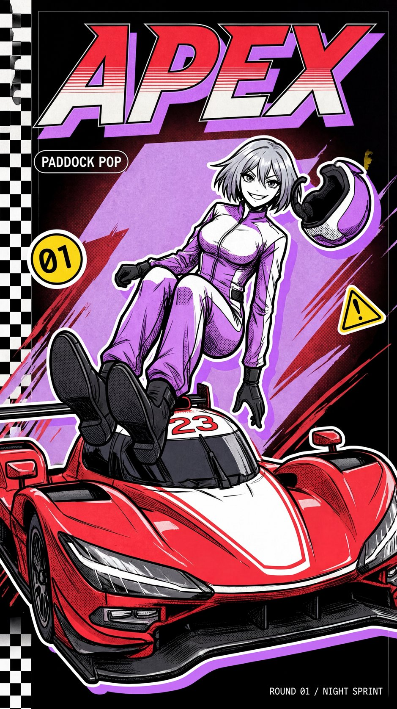
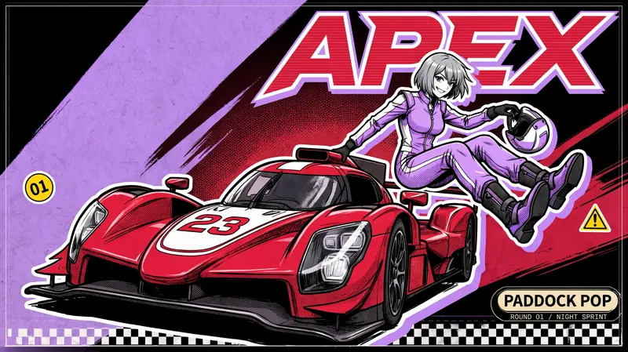
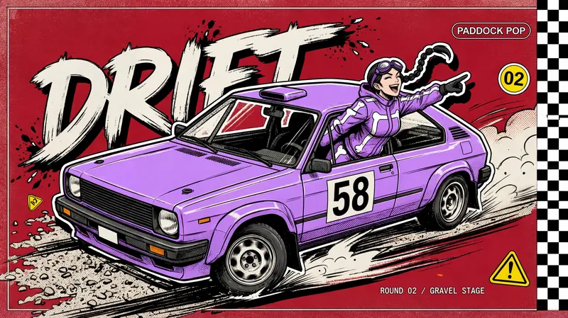
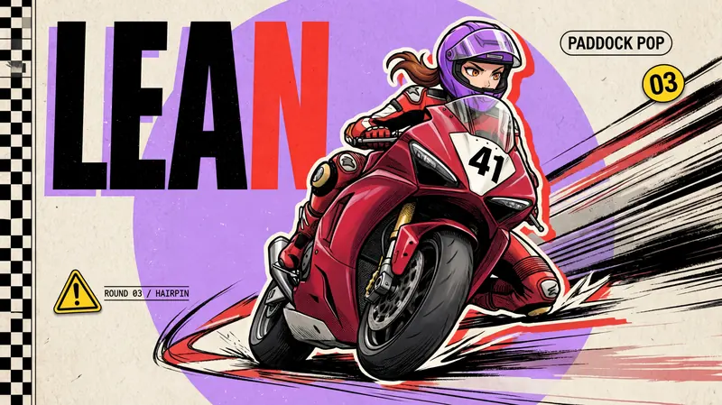
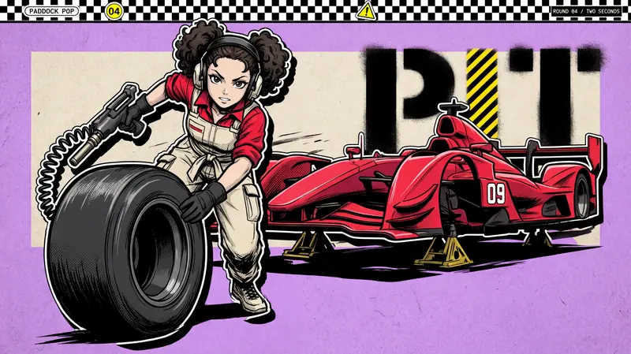

Type Posters · AI image style prompt
Paddock Pop
Anime cel-shaded racing posters: ink-line drivers and machines, halftone shading, sticker cutouts with offset shadows, a custom title typeface and rotating bold base color per poster.

4 example cases
Same style.json, different subjects. Each case's values are in the examples section of the JSON.




What this style does
Original anime cel-shaded posters of racing drivers and machines: ink-line sketching with halftone shading, sticker-style cutouts with offset drop shadows, a custom title typeface per case (wedge racing type, dry-brush handwriting, slanted ultra-condensed, warning stencil), a rotating base color per case (ink black / vermilion / bone white with purple circle / electric violet), dry-brush speed scratches, checkerboards and sticker kits.
Signature traits
- 2D anime cel-shaded illustration of an original adult motorsport character with an original unbranded vehicle; confident attitude, fully clothed in racing gear.
- Expressive ink linework: variable-weight black outlines, loose sketch hatching and halftone dots inside shadows, flat two-tone cel fills, hard glossy highlights on paint and leather, visible paper grain over everything.
- Low wide-angle camera with strong foreshortening; the vehicle is a large graphic mass and one part of it or of the character comes close to the lens. Never a neutral side-on pose.
- Hero and vehicle read as one die-cut cutout: thin bone-white sticker outline plus a thick flat offset drop shadow in the palette colour that contrasts with the ground.
- One short title word as enormous custom display lettering, partly hidden behind the hero. The lettering style is designed per case from its motion (wedge-cut racing wordmark, dry-brush script, sheared ultra-condensed capitals, hazard stencil) and never repeats inside the series.
- Fixed palette: bone, ink black, signal vermilion, electric lilac, small hits of sticker yellow. The dominant ground colour rotates per case (ink black, vermilion, bone with lilac disc, lilac) with paper grain, halftone and print misregistration. Dry-brush slash streaks carry the motion.
style.json
{
"schema_version": "2.2",
"style_name": "Paddock Pop",
"style_slug": "paddock-pop",
"style_version": "1.0",
"category": "Type Posters",
"style_summary": "Original anime cel-shaded posters of racing drivers and machines: ink-line sketching with halftone shading, sticker-style cutouts with offset drop shadows, a custom title typeface per case (wedge racing type, dry-brush handwriting, slanted ultra-condensed, warning stencil), a rotating base color per case (ink black / vermilion / bone white with purple circle / electric violet), dry-brush speed scratches, checkerboards and sticker kits.",
"environment_variables": {
"ASPECT_RATIO": "9:16 or 16:9",
"STYLE_FIDELITY_ANCHORS": "Runtime shared CORE and FLEX rules",
"SOURCE_CONTENT_TO_AVOID": "Runtime exclusions from all four references",
"SUBJECT": "Original adult motorsport character, outfit and original vehicle",
"SUBJECT_ACTION": "Action and camera",
"MAIN_TEXT": "Exact short title word",
"DESIGN_DIRECTION": "Title, hero, vehicle and checker strip placement, including landscape adaptation"
},
"style_fidelity_anchors": [
"[CORE] 2D anime cel-shaded illustration of an original adult motorsport character with an original unbranded vehicle; confident attitude, fully clothed in racing gear.",
"[CORE] Expressive ink linework: variable-weight black outlines, loose sketch hatching and halftone dots inside shadows, flat two-tone cel fills, hard glossy highlights on paint and leather, visible paper grain over everything.",
"[CORE] Low wide-angle camera with strong foreshortening; the vehicle is a large graphic mass and one part of it or of the character comes close to the lens. Never a neutral side-on pose.",
"[CORE] Hero and vehicle read as one die-cut cutout: thin bone-white sticker outline plus a thick flat offset drop shadow in the palette colour that contrasts with the ground.",
"[CORE] One short title word as enormous custom display lettering, partly hidden behind the hero. The lettering style is designed per case from its motion (wedge-cut racing wordmark, dry-brush script, sheared ultra-condensed capitals, hazard stencil) and never repeats inside the series.",
"[CORE] Fixed palette: bone, ink black, signal vermilion, electric lilac, small hits of sticker yellow. The dominant ground colour rotates per case (ink black, vermilion, bone with lilac disc, lilac) with paper grain, halftone and print misregistration. Dry-brush slash streaks carry the motion.",
"[CORE] Designed overlay: one black-and-white checkerboard strip, a thin ink inset frame, one outlined pill label, one yellow number roundel sticker, one yellow warning-triangle sticker with slight paper wrinkle, one tiny monospace caption line.",
"[FLEX] Character, vehicle, action, title lettering, ground colour and title position change per case while linework, palette, cutout shadow and overlay kit stay fixed.",
"[FLEX] Landscape versions are recomposed natively with the same character and title, never cropped from the vertical."
],
"source_content_to_avoid": [
"All existing characters, games and brands: Pauline, Mario Kart items (crown, stars, shells, coins, question blocks), Blue Archive-style halo girl, Le Mans, Toyota, Audi, Michelin and every sponsor logo.",
"R1 pairing of chibi twin-tail girl with halo and mechanical wings seated on a rear spoiler, its lavender-grey monochrome scheme and the word 'WISP'.",
"R2 pairing of ponytail woman leaning on a parked motorcycle with crown and smiling star stickers, its 'New' ribbon, 'ONE WAY' sign and maroon-cream-yellow scheme.",
"R3 pairing of swimsuit figure repeated twice over a front-on coupe with four-ring badge; no revealing outfits, no duplicated figure.",
"R4 pairing of white-haired girl with both arms spread behind a red-white prototype, jet flyover with tricolour trails, sponsor-covered skirt and the stacked event title.",
"No real car or motorcycle model, no manufacturer badge, no sponsor decals, no source words, signatures, dates or creator handles."
],
"visual_deconstruction": {
"genre": "Anime motorsport character-and-machine poster.",
"energy": {
"density": "70–80% active surface; bone paper keeps 20–30% calm.",
"layering": "Paper, colour block, title, brush slashes, vehicle, character, stickers.",
"disorder": "Brush slashes, sticker wrinkles and colour fringing only; drawing stays controlled.",
"tension": "Foreshortened limbs and wheels at the lens, steep diagonals, title cut by the hero."
},
"fusion": {
"genre": "All four: anime character with a racing machine; every identity and vehicle replaced.",
"palette": "R4 signal red, R1 lilac and chromatic fringing, R2 cream paper and sticker yellow, R3 ink black and grey halftone.",
"finish": "R3 sketch ink line, hatching and paper grain + R2 clean cel fills + R1 glossy paint highlights.",
"type": "R1 title hidden behind the hero with print offset; R4 heavy racing weight; lettering style redesigned per case.",
"layout": "R1 steep foreshortened view of the machine, R2 inset panel with cutout breaking the frame, R4 diagonal speed composition, R3 low heroic angle.",
"secondary": "R2 checkerboard, die-cut stickers and offset colour shadow; R4 dry-brush slashes; R1 small mono caption.",
"balance": "R1 25%, R2 30%, R3 20%, R4 25%."
},
"grammar": [
"Ink-and-cel anime drawing",
"Sticker cutout, glitch title, brush speed"
],
"signature": {
"R1": "Halo girl seated on spoiler replaced by a driver vaulting from a prototype cockpit.",
"R2": "Woman leaning on parked bike with game stickers replaced by a knee-down racer in motion with neutral track stickers.",
"R3": "Swimsuit double figure over a badged coupe replaced by a suited rally driver leaning out of a sliding hatchback.",
"R4": "Arms-spread girl with sponsored prototype and jets replaced by a pit mechanic rolling a tyre at the lens."
},
"series_constants": "Ink line with halftone, bone/ink/vermilion/lilac palette, die-cut offset shadow, brush slashes, checker strip, pill label, number roundel, warning triangle, mono caption. Lettering style and ground colour rotate per case."
},
"composition": {
"ratio_pair": "9:16 / 16:9, generate natively",
"structure": "Title occupies 20–35% of the frame and is partly hidden behind the hero.",
"placement": "Upper third / tilted along bottom / slanted upper left / across the top."
},
"typography": {
"class": "Custom display lettering designed per case from its motion; four different lettering styles in one series.",
"primary": "Only MAIN_TEXT is large; spell exactly.",
"texture": "Print misregistration, brush or spray edges where the style calls for it; tiny monospace caption; never a signature tag."
},
"color_palette": {
"paper": "bone #EFE9DC",
"ink": "black #141414",
"primary": "signal vermilion #E2261C",
"secondary": "electric lilac #B79CF2",
"sticker": "yellow #F4C531",
"fringe": "green #4BE38A"
},
"image_treatment": {
"base": "Hand-drawn anime cel illustration with sketch ink line; not 3D, not photographic.",
"local_effects": "Halftone and hatching in shadows, paper grain, chromatic fringing on title and a few edges, dry-brush slashes.",
"light": "Graphic two-tone shading with hard glossy highlights."
},
"design_rules": [
"Character and vehicle are one cutout with the vermilion offset shadow.",
"Title is enormous custom lettering, different per case, cut by the hero.",
"Every sample shows all four reference contributions.",
"Original adult characters and unbranded vehicles only."
],
"do": [
"Push foreshortening and diagonals.",
"Give each case a different vehicle, action and title position.",
"Check title spelling enlarged."
],
"avoid": [
"Static pin-up or leaning pose.",
"Revealing outfits or minors.",
"Any real brand, sponsor, game item or source character."
],
"prompt_template": "Create one full-bleed {ASPECT_RATIO} poster in the Paddock Pop style.\nRender: 2D anime cel-shaded illustration with expressive ink linework, sketch hatching and halftone shadows, flat two-tone fills, glossy highlights, paper grain.\nSubject: {SUBJECT}\nAction/camera: {SUBJECT_ACTION}\nComposition: {DESIGN_DIRECTION}\nCutout: hero and vehicle share a thin bone-white sticker outline and a thick flat contrasting drop shadow offset down-right.\nTitle, exact: \"{MAIN_TEXT}\", spelled letter by letter, enormous custom display lettering in the case's own style (see DESIGN_DIRECTION), partly hidden behind the hero.\nGround colour per case. Palette: bone, ink black, signal vermilion, electric lilac, small sticker yellow; dry-brush slash streaks.\nOverlay: checkerboard strip, thin ink inset frame, pill label 'PADDOCK POP', yellow number roundel, yellow warning-triangle sticker, tiny monospace caption.\n{STYLE_FIDELITY_ANCHORS}\nExclude: {SOURCE_CONTENT_TO_AVOID}",
"negative_prompt": "Existing game or anime characters, real car or motorcycle models, manufacturer badges, sponsor logos, halo, wings, crown, smiling star stickers, jets, swimsuit, revealing outfit, child, duplicated figure, signature, creator handle, watermark, 3D render, photo, neutral standing pose, tiny title, misspelled title, extra limbs.",
"examples": [
{
"case_name": "cockpit-vault",
"values": {
"MAIN_TEXT": "APEX",
"SUBJECT": "An adult woman racing driver with a choppy silver bob and sharp confident grin, electric-lilac-and-bone race suit zipped to the collar, black gloves, helmet swinging in one hand; her car is an original low wedge-shaped endurance prototype painted vermilion red with a bone-white nose stripe and race number 23.",
"SUBJECT_ACTION": "Vaulting out of the open cockpit in mid-air, not seated and not resting on the bodywork: one gloved hand pushing off the roof edge, knees tucked, both boots thrust toward the lens in strong foreshortening; camera low at the front splitter so the car nose is a huge wedge.",
"DESIGN_DIRECTION": "Car nose fills the lower third pointing at the viewer, driver airborne above it at centre, APEX huge across the upper third and partly hidden behind her body and helmet; checker strip down the left edge. Roundel '01', caption 'ROUND 01 / NIGHT SPRINT'. Landscape: Car in three-quarter front view filling the lower left two thirds with its nose close to the lens, driver airborne above the cockpit at centre right, APEX huge upper right behind her; checker strip along the bottom edge. Type: custom racing wordmark lettering: sharp wedge-cut forward-slanted capitals with pointed terminals, filled vermilion red with a bone-white inline stripe and a thick electric lilac offset layer behind every letter, thin horizontal speed-line slices cutting through every letter. Ground: ink black night ground with one huge flat electric lilac diagonal slash panel covering about a third of the frame behind the car and driver, plus a vermilion halftone glow; cutout shadow electric lilac."
}
},
{
"case_name": "gravel-slide",
"values": {
"MAIN_TEXT": "DRIFT",
"SUBJECT": "An adult woman rally driver with a long black braid and round goggles pushed up on her forehead, lilac rally jacket with bone stripes, black gloves; her car is an original boxy 1980s-style rally hatchback painted electric lilac with roof lamps and race number 58.",
"SUBJECT_ACTION": "The hatchback slides sideways through a gravel bend, seen from a high three-quarter angle, front wheels on full opposite lock; she leans far out of the driver window laughing, one arm thrown out pointing ahead, braid whipping back.",
"DESIGN_DIRECTION": "Car set on a steep diagonal from lower left to upper right filling the middle, gravel spray and tyre smoke drawn as dry-brush slashes, DRIFT huge and tilted along the bottom, the rear wheel overlapping its last letters; checker strip across the top edge. Roundel '02', caption 'ROUND 02 / GRAVEL STAGE'. Landscape: Car sliding from right to left across the centre, long brush-slash smoke trail to the right, DRIFT huge across the upper left behind the roof lamps; checker strip down the right edge. Type: hand-painted dry-brush lettering: thick loose brush-script capitals in bone white with ragged bristle edges, ink-black splatter and drips, set on a curved skidding baseline that follows the slide. Ground: flat signal vermilion red ground with coarse bone halftone dust; cutout shadow ink black."
}
},
{
"case_name": "hairpin-knee",
"values": {
"MAIN_TEXT": "LEAN",
"SUBJECT": "An adult woman motorcycle racer in a full vermilion leather race suit with bone panels and knee sliders, lilac full-face helmet with the visor open showing focused amber eyes, auburn ponytail streaming from under the helmet; her machine is an original fully faired vermilion sport bike with race number 41 on the fairing.",
"SUBJECT_ACTION": "Cornering at extreme lean with her knee skimming the kerb, shot from a very low angle on the inside of the corner so the front tyre and her knee are huge at the lens and the bike rakes diagonally across the frame.",
"DESIGN_DIRECTION": "Bike and rider leaned over at about fifty degrees, forming one steep diagonal from upper right to lower left, front wheel huge at the lower left near the lens, her knee slider touching the red-and-white kerb, LEAN huge and slanted with the same angle in the upper left, her helmet overlapping the last letter; striped kerb and checker strip along the bottom. Roundel '03', caption 'ROUND 03 / HAIRPIN'. Landscape: Bike leaning in from the right, front wheel at the lower centre, long kerb curve sweeping left, LEAN huge across the upper left; checker strip down the left edge. Type: ultra-condensed towering poster capitals, each letter sheared hard to the same lean angle as the bike, solid ink black with the last letter filled vermilion, a lilac misregistered print offset behind. Ground: bone paper ground with one huge electric lilac circle behind the rider; cutout shadow vermilion."
}
},
{
"case_name": "pit-stop",
"values": {
"MAIN_TEXT": "PIT",
"SUBJECT": "An adult woman pit mechanic with dark curly hair in two puffs, a headset, vermilion crew shirt and bone coveralls tied at the waist, heavy black gloves; behind her an original vermilion-red open-wheel single-seater racing car with race number 09 raised on jacks.",
"SUBJECT_ACTION": "Lunging forward to roll a huge slick racing tyre straight at the lens with one hand while the other hand firmly grips an air wheel gun with a coiled hose; camera on the pit floor so the tyre is enormous in the foreground and she towers above it.",
"DESIGN_DIRECTION": "Tyre fills the lower right foreground, mechanic at centre above it, single-seater small behind on the left, PIT in three enormous letters across the top, partly hidden behind her head and the raised wheel gun; checker strip down the right edge. Roundel '04', caption 'ROUND 04 / TWO SECONDS'. Landscape: Tyre huge at lower left, mechanic centre, single-seater stretching to the right, PIT enormous at upper right behind the car's rear wing; checker strip along the top edge. Type: heavy industrial stencil block capitals with visible stencil bridges, ink black, the middle letter filled with yellow-and-black diagonal hazard stripes, rough spray-paint overspray around the edges. Ground: flat electric lilac ground with a bone paper block behind the car; cutout shadow ink black."
}
}
]
}